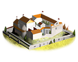
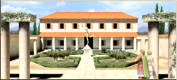
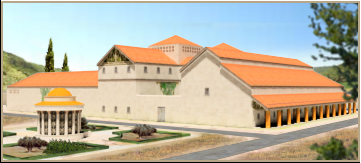
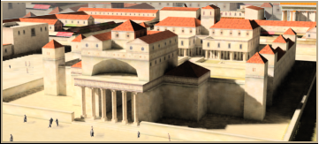
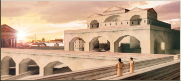
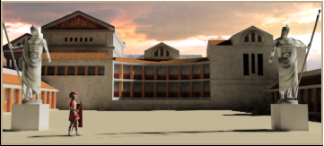

RTR: Imperium Surrectum
RTR: Imperium SurrectumGovernor's House chain
5 levels, each replacing the one before it — you upgrade in place rather than building alongside.
Governor's House → Governor's Villa → Governor's Palace → Pro-Consul's Palace → Imperial Palace
Pictures are the game's own building art. Where a culture ships none of its own, the game falls back to another culture's, and that is what is shown here.
Levels at a glance
| Level | Cost | Build time | Minimum settlement | Upgrades to | Level | Cost | Build time | Minimum settlement | Upgrades to | ||
|---|---|---|---|---|---|---|---|---|---|---|---|
| Governor's House | 1,600 | 2 | village | Governor's Villa | Governor's Villa | 3,200 | 4 | town | Governor's Palace | ||
| Governor's Palace | 6,400 | 6 | large town | Pro-Consul's Palace | Pro-Consul's Palace | 12,800 | 8 | city | Imperial Palace | ||
 | Imperial Palace | 19,000 | 10 | large city | — |
Costs in denarii, build time in turns.
Governor's House

The Governor's House is the controlling hub of the settlement, and the basis of all state power. Without firm Roman government, nothing else can develop.
The Governor's House is the centre for all administrative functions in a settlement. This is the power of the Roman state made real for the people who live here.
The administrator based here collects taxes, issues instructions to improve the settlement and manages the small day-to-day business of an empire.
While not exactly luxurious, the Governor's House is usually the best building in the settlement. Competition for an invitation to dinner is often fierce, and the locals also try to build their own houses close by so that some Roman prestige rubs off on them!
Wording varies by culture: 7 versions of this description exist in the game files.
| Cost | 1,600 denarii | Build time | 2 turns | Minimum settlement | village | Upgrades to | Governor's Villa |
What it does
Show 7 effects that apply only in the circumstances shown
- allows recruiting Diplomats — only when
factions { all, } and requires_gov and is_player and hidden_resource capital - up to 3 Diplomats can be recruited in this settlement — only when
is_player and hidden_resource capital - allows recruiting Diplomats — only when
factions { all, } and hidden_resource capital and not is_player - up to 1 Diplomat can be recruited in this settlement — only when
hidden_resource capital and not is_player - +99 public order (happiness) — only when
hidden_resource cg_antibonus - -50 population growth — only when
hidden_resource cg_antibonus - -50 taxable income — only when
hidden_resource cg_antibonus
Governor's Villa

The Governor's Villa is the centre of the settlement: the place where important decisions are made. It brings a small touch of class to a town and allows further development.
The Governor's Villa is the place where important decisions are made, and it gives the locals a taste of Roman grandeur. It also serves as a training ground in basic politics and the uses of power. The Villa is also a sign that Roman influence is permanent and secure.
The Villa allows development in a settlement to begin in earnest, as it marks the town as a place where investments are worthwhile. Improvements to existing structures and new building projects are now possible.
Wording varies by culture: 7 versions of this description exist in the game files.
| Cost | 3,200 denarii | Build time | 4 turns | Minimum settlement | town | Upgrades to | Governor's Palace |
What it does
Show 4 effects that apply only in the circumstances shown
- allows recruiting Diplomats — only when
factions { all, } and requires_gov and is_player and hidden_resource capital - up to 3 Diplomats can be recruited in this settlement — only when
is_player and hidden_resource capital - allows recruiting Diplomats — only when
factions { all, } and hidden_resource capital and not is_player - up to 1 Diplomat can be recruited in this settlement — only when
hidden_resource capital and not is_player
Governor's Palace

The Governor's Palace is an important centre of political power, and a deliberately impressive symbol of Roman might and authority.
A Governor's Palace is a deliberately impressive symbol of Roman political might and authority. Its grandeur shows the locals the benefits of Roman rule and the futility of rebellion. Because it is a major centre of government, diplomats receive training here too.
The Palace allows further development to continue in the settlement around it, as the town becomes a place that attracts wealth and influence. The finer things in life - such as entertainment and education - become available as a result. Improvements to existing structures and new, advanced building projects can now be carried out.
Wording varies by culture: 7 versions of this description exist in the game files.
| Cost | 6,400 denarii | Build time | 6 turns | Minimum settlement | large town | Upgrades to | Pro-Consul's Palace |
What it does
Show 5 effects that apply only in the circumstances shown
- allows recruiting Diplomats — only when
factions { all, } and requires_gov and is_player and hidden_resource capital - up to 3 Diplomats can be recruited in this settlement — only when
is_player and hidden_resource capital - +1 public order (law) — only when
purple_dye_building_supply_not_local - allows recruiting Diplomats — only when
factions { all, } and hidden_resource capital and not is_player - up to 1 Diplomat can be recruited in this settlement — only when
hidden_resource capital and not is_player
Pro-Consul's Palace

The Pro-Consul's Palace is an unmissable symbol of Roman might and authority. Those who live in its shadow can have no doubts as to who is in charge.
A Pro-Consul's Palace is unmissable as a symbol of Roman authority. The building's size and luxury are intended to impress everyone in a city. The bureaucrats based here collect taxes, manage improvements to the city and efficiently carry out all the business of empire.
A Pro-Consul's Palace allows advanced development, as the most costly building projects can be undertaken. All aspects of life within the city can be improved: religious, military and economic.
Wording varies by culture: 6 versions of this description exist in the game files.
| Cost | 12,800 denarii | Build time | 8 turns | Minimum settlement | city | Upgrades to | Imperial Palace |
What it does
Show 5 effects that apply only in the circumstances shown
- allows recruiting Diplomats — only when
factions { all, } and requires_gov and is_player and hidden_resource capital - up to 3 Diplomats can be recruited in this settlement — only when
is_player and hidden_resource capital - +1 public order (law) — only when
purple_dye_building_supply_not_local - allows recruiting Diplomats — only when
factions { all, } and hidden_resource capital and not is_player - up to 1 Diplomat can be recruited in this settlement — only when
hidden_resource capital and not is_player
Imperial Palace

The Curia is the ultimate expression in marble and stone of Roman authority.
The Curia, or Senate House, in Rome is the ultimate expression in marble and stone of Roman authority. Here on the forum the meaning of the phrase Senatus Populusque Romanus is made clear, the people outside busy themselves in everyday business whereas inside the Senators steer Rome towards world power. Those who live beneath its walls can have no doubt as to where power lies, while those inside control every aspect of the city. The largest of provincial cities have their own cities councils and their own Curia buildings.
The Curia allows the most advanced construction in a city, allowing magnificent buildings to be built.
Wording varies by culture: 5 versions of this description exist in the game files.
| Cost | 19,000 denarii | Build time | 10 turns | Minimum settlement | large city |
What it does
Show 5 effects that apply only in the circumstances shown
- allows recruiting Diplomats — only when
factions { all, } and requires_gov and is_player and hidden_resource capital - up to 3 Diplomats can be recruited in this settlement — only when
is_player and hidden_resource capital - +1 public order (law) — only when
purple_dye_building_supply_not_local - allows recruiting Diplomats — only when
factions { all, } and hidden_resource capital and not is_player - up to 1 Diplomat can be recruited in this settlement — only when
hidden_resource capital and not is_player
What the shorthands in those conditions stand for (2)
These are the mod's own, quoted from the game files unchanged.
| Shorthand | Stands for | Shorthand | Stands for | ||
|---|---|---|---|---|---|
purple_dye_building_supply_not_local | hidden_resource purple_dye_supply_built factionwide | requires_gov | building_present governmentA or building_present governmentB or building_present governmentC or building_present governmentD or not is_player |